他，是皇室御医的真正传人！凭一招黑发绝技，让数百万白发人从根变得满头黑发！
他,做客新闻媒体，郑重承诺：别人三年五年、十年八年治不好的白发，他只需1副药，就能让头发从根往外变黑！
他，痛斥化学染发剂，怒发冲冠：年年染发，染出了癌症，到底谁负责！
他，炮轰传统黑发方法，一针见血：不能让从根变黑的，全是忽悠人！
他就是北京城里的黑发奇人——徐教授！
"我从医40年了，治白发，我不走寻常路，因为寻常方法根本治不好白发！我就用祖传的这个方子，它别的病不治，专治两鬓斑白、头发花白、满头白发、少白头！
用过的人都劝我做做宣传，那我就实话实说，保证一句不掺假，治别的病，我不敢说，白发变黑发，我敢说，用一个好一个！两个月，60天让您的黑头发一茬一茬的往外拱！否则负责到底！
今天我们就把事实摆在您前面，让大家都见识见识
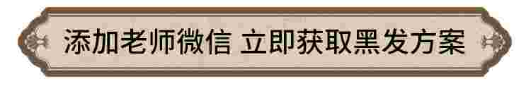↓长按三秒识别下方二维码↓
看！真的黑了！他们都白发都变黑了
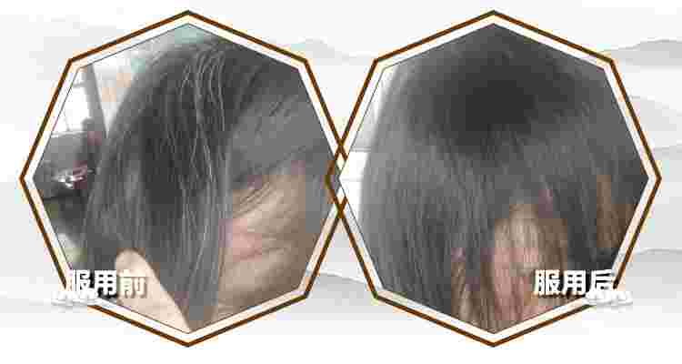我说以前白头发越长越多呢，就是因为头发缺血，而且总染发毛囊都烧坏了，想黑也黑不了啊！这回用上徐教授的补肾养血丸，毛囊不缺血了，黑头发立马就长出来了，你看长得多好啊？我最高兴的是，多年脱发问题也解决了！
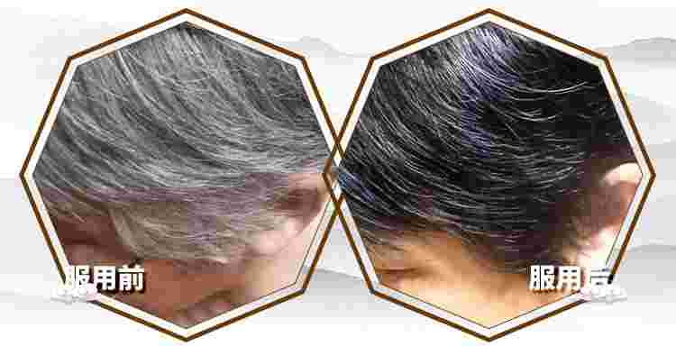用上徐教授的补肾养血丸，我算是明白了，白头发根本不用染，找到病根儿，黑头发自己就能长出来！你看我70多岁的人了，就用补肾养血丸，眼看着黑头发全长出来了，儿女都说：妈你这是返老还童了！
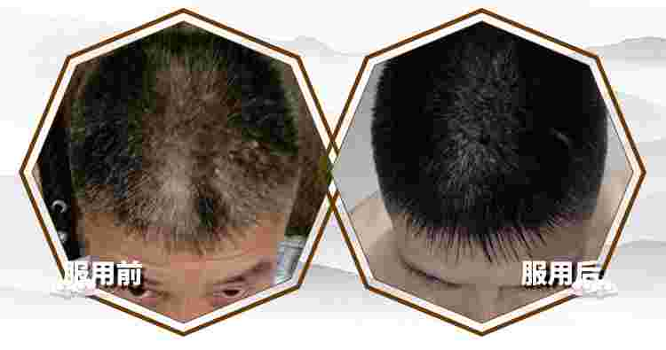白发不用再染了！就3天，眼看着发根就长出黑头发了！然后越来越多，全是黑头发，真真正正的黑头发！整个人一下年轻十几岁！
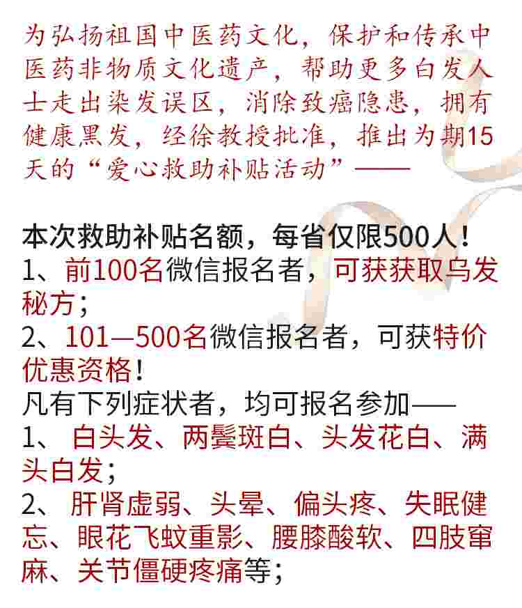↓长按三秒识别下方二维码↓
用7天，你会发现：密实的黑发根长出来了，同时头晕头疼症状显著消失！白天精力充足，晚上一觉能睡七八个小时！
用30天，黑发头越长越长，原来的白发梢也开始变黑了，同时视力光感通透，飞蚊症重影淡化消失，看东西清清楚楚；耳朵听声音越来越清亮，看电视、听广播再也不用开很大声音了！
用60天或坚持服用，就能找回满头乌黑发亮的头发，不光一根白头发都没有，而且看上去又黑且又有光泽，摸上去又滑又有弹性，属于自己的黑头发！
从此，腰腿变得灵活又有劲儿，骨头关节再也没有僵硬、疼痛的感觉，活动自如；让您从里到外年轻十几二十岁！
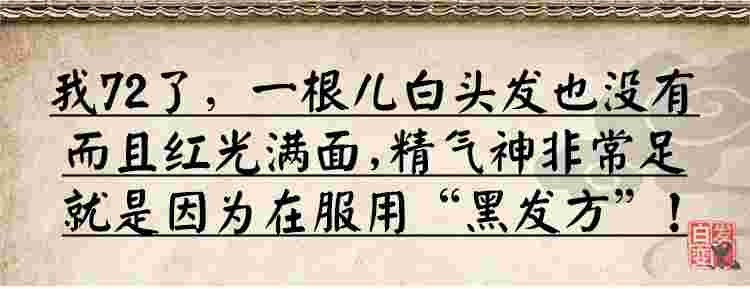
看！我今年72岁，一根白头发也没有，眼睛看得准，耳朵听得清，全身的骨头关节都非常灵活，血压也很正常，这都是依靠“黑发方”的独特功效。
所以说有白头发的人，我劝你们别再用染发膏欺骗自己了，更别再伤害自己了；既然是化学制剂，一旦渗透进入毛囊，就必然对人体造成伤害，所以咱们不能为了美，损失健康，对不对？
你看，这是化学制剂染过的头发，内髓已经被破坏，所以发质就会变得极差
再看用我的补肾养血丸的头发，从表皮到内髓都是非常的平滑，甚至超越了正常人的头发！
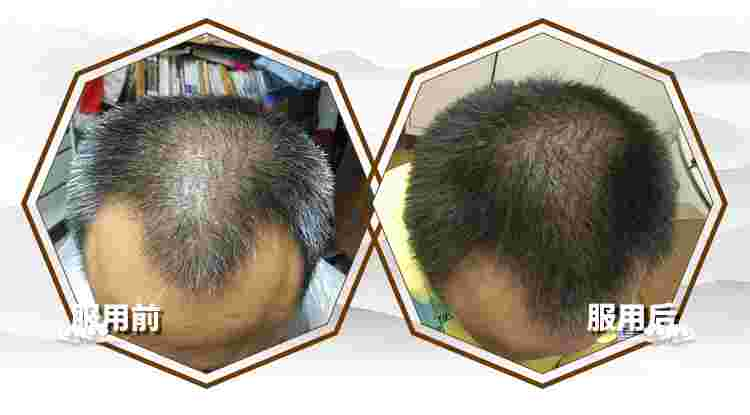你看，这都是我以前的染发剂，说实话，我是真不放心啊，这化学的东西老用肯定不行，可是以前没办法啊，现在好了，人家这个补肾养血丸，说60天，真是60天，让我这每一根黑头发都是自己长出来的！
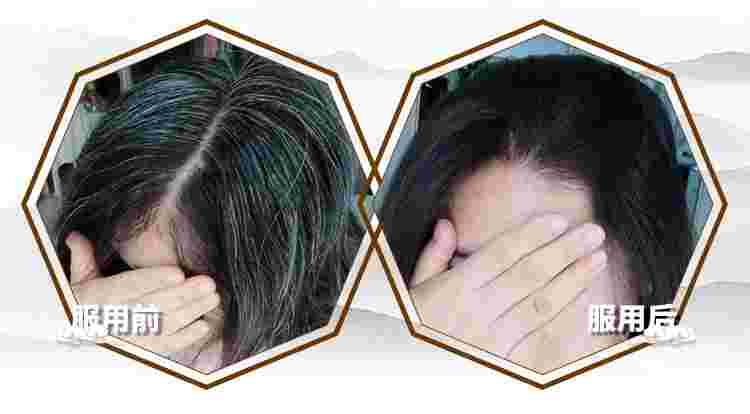大家看一看国家批准的说明书，各个都是纯中药，没有任何化学成分。对人体只有好处，没有坏处！
我可以拍这胸脯说，如果你用了“补肾养血丸”，没有见到你想要的效果，你可以马上联系我，我坚决给你负责到底！
↓长按三秒识别下方二维码↓
↓长按三秒识别下方二维码↓
开始也有人不信，这个方子真能治好白头发，包括延庆医院何主任，他是留美博士，满头花白头发，什么顶尖的技术都用过，都不行，也根本不相信中医。
他每个月都要染一回头发，头发又干又脆，一点儿营养也没有，每次染完，头皮里都起很多小红疙瘩，特别痒，一挠就破还很疼，一破好几天都不敢洗澡！
后来还是徐教授主动找到他，劝他用祖传的补肾养血丸，不到30天，何主任就打电话来了，说：真没想到，黑头发真长出来了！用完两副药，他主动登门感谢，头发全黑了，人精神了，气色也好了！
他激动地握着徐教授的手说：“以前是我不对，对中医古方不了解，以后啊，我一定要帮咱们中医正正名！”
1、快速黑发:3天生出黑发根，30天长出黑头发，60天满头黑发，一茬一茬往外拱！
2、方便省钱：传统染发，又染又抹又蒸，每次弄得脏兮兮，还花好几个小时，补肾养血丸，简单方便，每年能省好几千！
3、终身远离染发危害：一个星期你就会感觉到头皮微微发痒，这说明新头发正在往外长，30—60天，你就会看到黑头发一茬一茬的长出来了，而且又浓又密，从此远离染发危害！
听说这个“补肾养血丸”治疗白发效果特别好，我们公司同事刘姐生完孩子之后，这额头两边很多白发，而且还脱发，就用的这方子，不到60天，现在白头发没有了，黑头发全都长出来了，就连脱发的问题也解决了，看上去明显年轻了七八岁呢。今天我特意过来买几盒，赶紧把我这白发的问题也给治好，永远保持年轻漂亮！
李明川，45岁，企业公司老板，忙碌的工作，让他的头发开始一天天的花白，染发没时间，偶尔染一次，弄的衣服上、耳朵上，到处都是，洗都洗不掉，可不染，又不好意思出门见客户……
“人都要面子，你说年纪轻轻就一头白发，说不过去呀；染发我是不想了，太痛苦了，又脏又过敏，受不了；前一段时间，一个客户告诉我这个乌发的方子，确实是好东西；不用染发，特别方便，头发乌黑有光泽不说，稀疏的头发也长密了！”
↓长按三秒识别下方二维码↓
《黄帝内经·素问》：发为血之余，血亏则发枯！补血养血可助毛发生长。事实上，白发、脱发的病根就是——
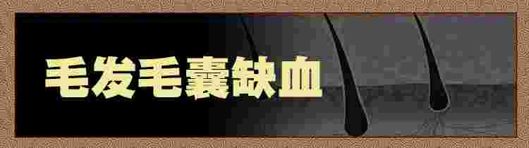
所以老百姓常说：要想头发黑，血液不能亏！头发必须有血液的濡养，才能乌黑、浓密、柔韧、光泽有弹性！
很多人因为劳累过度、熬夜、情绪烦躁、年龄增长等，渐渐地，没有足够的血液进入头发毛囊了，毛囊就会因缺血而萎缩，头发缺少了血液的濡养，就从黑变灰、从灰变白！
这就像种庄稼，水源充足、土地肥沃的土地里长出来的庄稼，枝繁叶茂，花红柳绿，硕果累累；而长在盐碱地里的庄稼，肯定是歪的歪，黄的黄，稀稀拉拉结不出几个果！
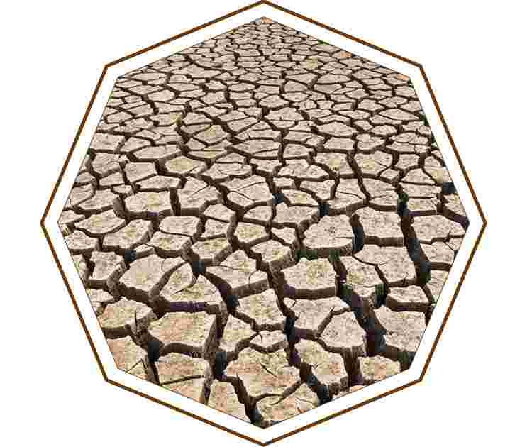
更可怕的是——那些长期染发的人，就像用化肥农药种庄稼，化学重金属腐蚀了土地，渐渐地会寸草不生！染发膏也一样，长期染发，刺激毛囊，会导致毛囊萎缩坏死，一点血也进不去了，最后不仅仅是让你头发越来越白，头发还越来越少！
这个补肾养血丸，解决的就是毛囊缺血的问题！能让血液充足供应毛囊，濡养毛囊，让毛囊供血恢复正常
3—7天生出黑发根，30天长出黑头发，60天，你就能看到一茬一茬黑发往外拱了！不管您年纪多大，哪怕就是七八十的老人，也让您一根白发都没有！问题的关键是——
《黄帝内经》指出：气为血之帅，血为气之母，气推血行，相互作用，才形成了心脏的跳动和血液的流动。清末著名中医王清任的《医林改错》也写到：“元气既虚，必不能达于血管，血管无气，血必停留而瘀。”
所以，必须补足肾气，提升肝的造血功能，“肾藏精，其华在发”，“肝藏血，发为血之余”
，头发的生长与脱落、润泽和枯槁与肝肾功能关系甚密——肝肾不足则未老先衰，头发枯萎，白发，脱发，不育，崩带，齿牙动摇，腰膝痠软，肾虚无子！
肾气充足，肝造血功能强，头发毛囊就供血充足，头发浓密、乌黑、有光泽；肾气不足，肝造血功能差，头发就稀疏、易脱落，所以，治疗白发、脱发的根本是补肝肾！
补肾养血丸就是通过补肝益肾，提升肝脏造血功能，来恢复头发毛囊的血液供应，《本草纲目》认为此方能乌须发，壮筋骨，固精气，续嗣延年，久服，“精力耗而复强，须发白而复黑”！
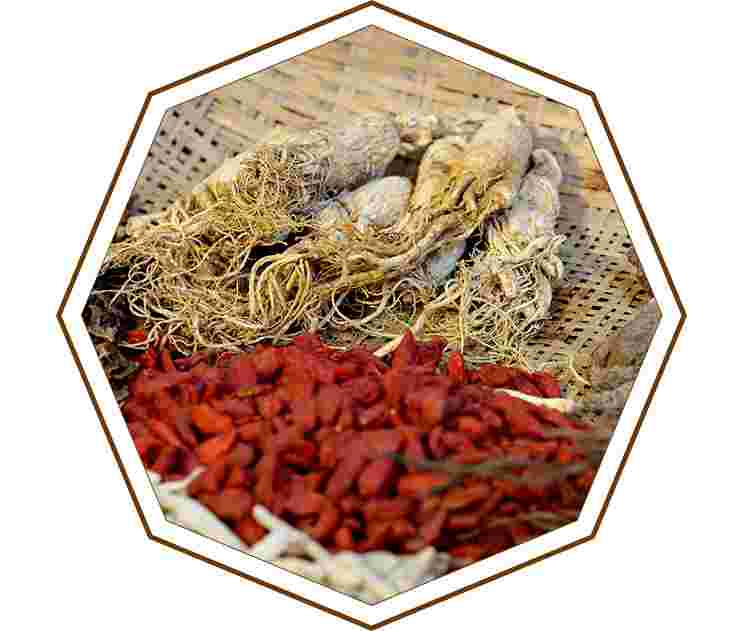《医方集解》也评价此方：此足少阴、厥阴药也。何首乌涩精固气，补肝坚肾，为君；茯苓交心肾而渗脾湿；牛膝强筋骨而益下焦；当归辛温以养血；枸杞甘寒而补水；菟丝子益三阴而强卫气；补骨脂助命火而暖丹田。此皆固本之药，使荣卫调适，水火相交，则气血太和，而白发自黑也。
李时珍《本草纲目》卷十八引邵应节中清楚无误地记载：“嘉靖初，邵应节真人以乌发方上进，世宗肃皇帝服饵有效，须发乌黑，连生皇嗣，补肾养血之方，乃大行天下……”
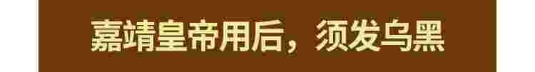
明朝嘉靖皇帝，是有名的玩主，声色犬马无一不精，14岁登基，24岁时身体几近淘空，没有皇子，白发丛生。
方士邵应节以《云笈七笺》的老君益寿散为基础，在众多滋补品中取长补短加以增删，进献补肾养血丸。
嘉靖皇帝服用后体力充沛，乌发重现，“肾气盛，天葵至，精气溢泻，阴阳和”，之后，皇子一个接一个诞生，连续生育8位皇子、5位公主，且身体愈发强健，从此该方成为养生乌发的名方！
慈禧很喜欢照相，照片中头发乌黑浓密，但老太监回忆，真实的情况是——
慈禧快五十岁时，除了两鬓和后脑勺，其他部分头发稀疏，而且白发很多！一个女人，垂帘听政，操劳这么大国家的军国大事，白发脱发是很正常的。
作为大清国太后，最注重的是什么？当然是容颜！这不仅代表自己的容貌，更关乎大清国的威仪！顶着一头花白稀疏的头发去见外国人，算什么样子？
《慈禧医方选议》记载——
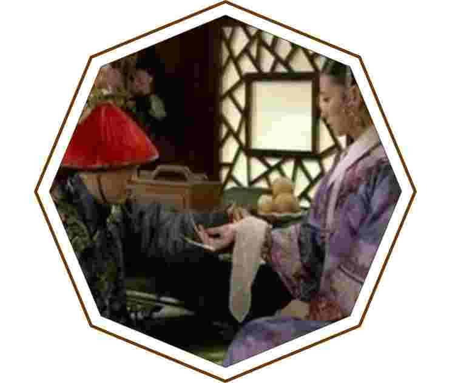光绪十一年，慈禧年五旬，因肾气不足、脾胃不健，发脱花白，三月十九日，令太医孙守如、李德昌、金顺、聂鸿钧拟调养之方，四位名医将历代相传的补肾养血方制成药丸，供老太后服用，事实证明，该方对她乌发健身起到了很大作用——
她年逾花甲仍“风韵不减当年，神采矍烁，肌肤如玉，青丝不落”，而且活了74岁，“垂帘听政”了40多年!
↓长按三秒识别下方二维码↓
肝肾造血，才有充沛的血液进入毛囊，让黑头发重新长出来，但想真正做到这点却非常不易，除了方子要好，关键是药材和工艺要到位!
整个制作工艺非常繁复、严格，必须选用地道的七味补益肝肾、调节五脏的药材，独家的17道工序才能炮制好。
尽管配方特殊，炮制工艺复杂，但只有这样做出来的药，才有十足药力，服用后，肝肾造血能力才能马上恢复到二三十岁的巅峰水平，让充沛的血液直达毛囊，源源不断濡养毛囊，从根生出黑发，不但生出黑发，而且不管长多长，也保证头发乌黑亮丽！
现代医学对这个名方进行了升级，采用超临界提取、分子显微化学鉴别法、严格的质量控制等现代制药工艺，制成黑药丸，确保了有效成份得到充分发挥，使含量更加稳定，吸收更快、疗效更确切！
↓长按三秒识别下方二维码↓
补肾乌发方的黑药丸一上市，迅速席卷全国！目前已成为回头客最多、销量最大的黑发产品！半年销售3亿5千万盒！
现在，越来越多的人开始用这个方子，不是一些人用，而是几百万、上千万人在用。
无数使用者感觉到了它无与伦比的效果，并最终引发了这个名方在全国的大爆发、大流行！
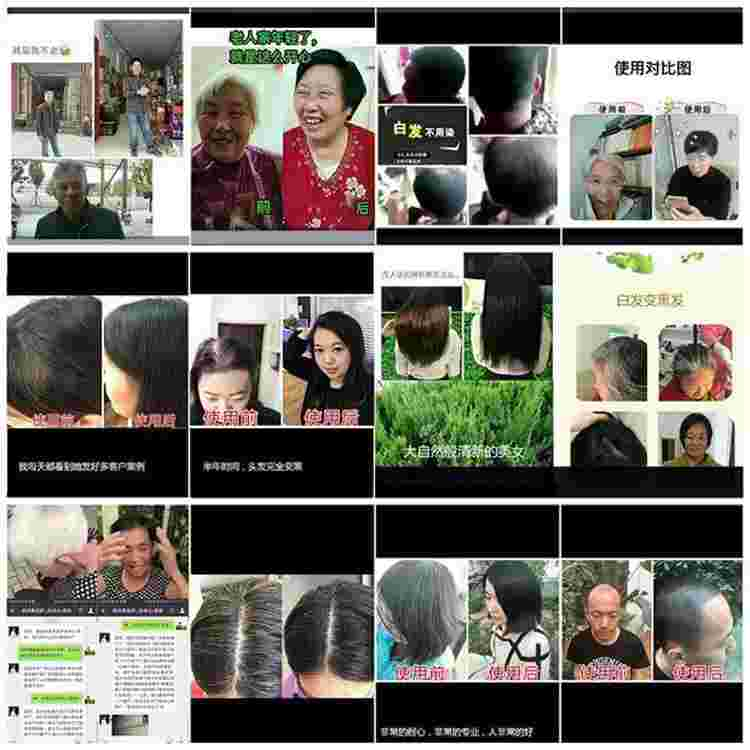
在上海：近6000名白发者试用7天后，便迫不及待加微信购买！
在北京： 5000多人参加了一周的试用体验，他们竟也纷纷加微信、打电话订购！
↓长按三秒识别下方二维码↓
“都是别人推荐来的，来一次黑一片儿，一次比一次效果好！”
药店药剂师 张翠芳
我在这药店工作10几年了，像“补肾养血丸”这样不用染发，从根长出黑头发的产品我还是第一次见。凡是来买的顾客，都是来一次头发黑一片儿，一次比一次效果好！而且都是顾客之间相互介绍来买的，有好几次都卖断货了呢！
60天，黑头发长出来了，让我特别自信，还省了大把钱和时间！
赵元强，25岁，19岁开始少白头，过敏肤质，无法经常染发；一头斑白头发；在学校被同学嘲笑，参加工作被同事嘲笑；连个女朋友都没有……
现在用上补肾养血丸，两个月，60天，黑头发长出来了，他高兴地说：“去理发店染发，便宜的一二百，自己染发，也得好几十块，一个月染两次，一年就是一两千块钱！用补肾养血丸，一劳永逸，现在特别自信，还省了大把钱和时间！”
黑头发基本上都长出来了，再也不用染发了！
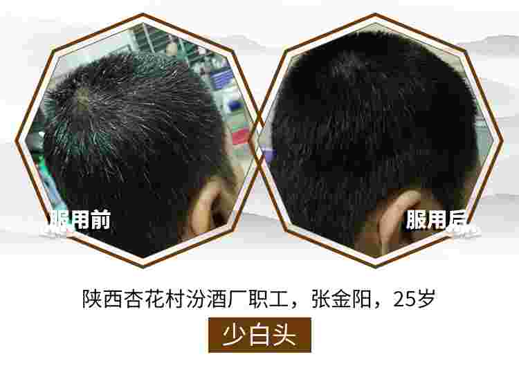提高肝肾造血，解决毛囊缺血，只有找到白发的病根，黑头发才能长出来。这“补肾养血丸”我就用了30来天，你看看我现在，黑头发基本上都长出来了，再也不用染发了。而且整个人感觉精气神特别的好，今天我又买了几盒，巩固巩固。
“我头发全黑了，再多买点，让老伴儿一起用！”
用了“补肾养血丸”，真是头发一天比一天黑，身体一天比一天好！就两个月、60天，我现在不光头发黑了，血压也平稳了，多年腰腿疼的老毛病也跟着好了。今天我和老伴儿一起来，再多买几盒，让老伴儿也一起吃。
金福顺：要不是亲眼看到老伴儿用了有这么大的变化，我还真不信。我现在也特别有信心，用上它，我也能年轻个十几二十岁。
↓长按三秒识别下方二维码↓
微信咨询：
（长按左方二维码识别添加）